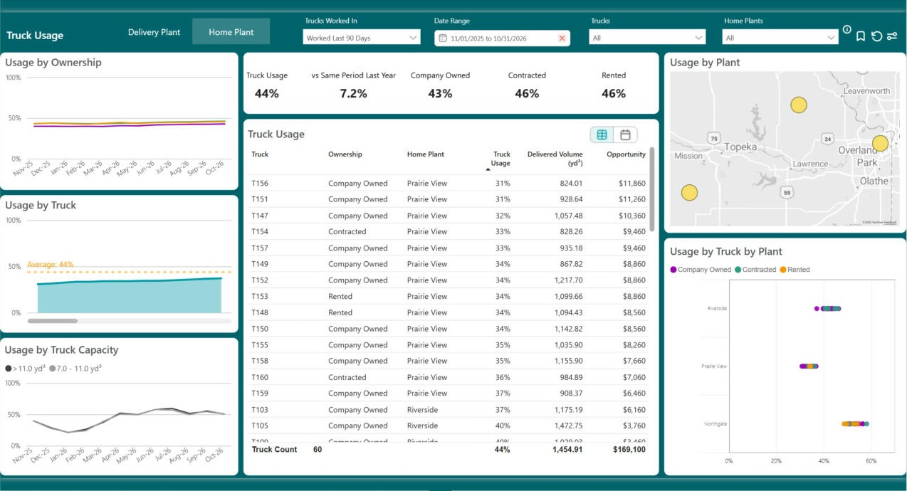

The problem
My role
Shows how much of the time each truck is actually working, by plant, ownership and truck capacity. Rank every truck, compare it with the fleet average and the same period last year, and see what the unused time is worth. Switch the table to a month by month heatmap to spot idle periods.
Questions it answers
- Which trucks are working the least, and in which plant?
- Is usage rising or falling against last year?
- What is the unused time worth in dollars?
- Construction materials
- 44 DAX measures
- Imperial and metric
- Row-level security
- Usage heatmap
20-second silent walkthrough, including the monthly heatmap.
Screenshots
